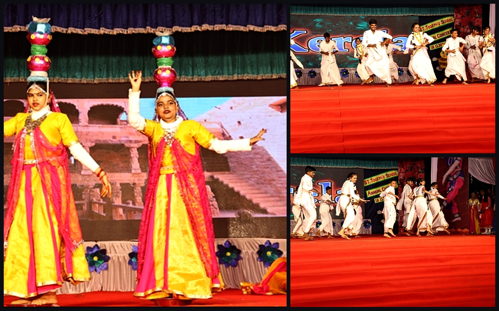

ACT 01
17:30 IST · MAIN AUDITORIUM
The Grand Overture
Symphony Orchestra & Senior Choir
The gala commences with Beethoven's Ode to Joy and an original symphonic suite "Aetheria", conducted by Maestro D. K. Sharma. A layered acoustic journey celebrating forty-two years of institutional heritage.
Conductor
Maestro D. K. Sharma
Ensemble
Senior Vocalists
Key Signature
D Major Symphonic